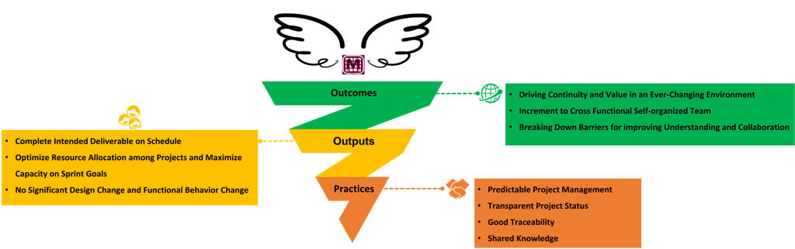

Illuminating the Path and Soaring Beyond Barriers: My Journey as a Scrum Master
As an engineer‑turned‑Scrum‑Master from China, I’ve spent the last few years helping a cross‑functional product team navigate organisational change, technical debt and feature pressure. We didn’t always get it right, however by consistently embracing transparency and continuous improvement, we managed to build a culture that valued quality, delivered on commitments, and made sure everyone’s voice was heard.
An inspective light on quality and culture
One of the first lessons I learned in this journey was that shipping new features at all costs is a false economy. In our "Inspective Light" OKR (Objectives and Key Results) framework, we intentionally set objectives around quality rather than how many features we can commit. By prioritizing bug fixes and regression prevention, we actually saw the number of bugs and regressions go down compared to the previous release. We also saw more issues being closed proactively, which indicated that engineers were catching and addressing problems before they even became bugs.
At the heart of our approach were continuous retrospection and team empowerment. We encouraged everyone on the team to acknowledge shortcomings openly and actively seek change. By reflecting on our progress without assigning blame (focusing on learning instead), the team fostered a culture of continuous improvement, proactively addressing challenges and adapting practices to enhance performance. This openness created a safe environment where problems were surfaced early and solved collaboratively.
The “Inspective Light” pyramid we created illustrated how this worked in practice. At the top of the pyramid were the outcomes we aimed for, like a stronger focus on quality and a safer team environment. In the middle were the outputs, such as concrete quality improvements and identified root causes of issues. At the base were the practices that supported these results, including habits like thorough post-mortem reviews. This diagram became a regular talking point in our retrospectives and helped new team members understand why we treated quality as non-negotiable.

Turning OKRs into action with post‑mortems
Objectives and Key Results (OKRs) are only useful when they trigger real work. For each key result we set, we defined specific initiatives – design, refactors or training sessions – that would move the needle on that metric. During sprint retrospective we checked whether the status of these actions. In this way, the flow from Objective → Key Result → Action became part of our vocabulary and prevented people from confusing tasks with outcomes.
To close the loop, we made post-mortem reviews a routine part of our process. At the end of each release cycle, we would:
- Review the previous release’s OKRs and results – discussing what worked well and what didn’t.
- Implement the follow-up actions – ensuring that retrospective items and experiment ideas were actually carried out during the release.
- Collected and analysed data – bug statistics, burndown charts and velocity metrics, then summarised lessons and defined the next OKR.

This continuous loop of learning and improvement (our post-mortem cycle) ensured we weren’t just making noise; we were systematically improving the way we worked. A typical post-mortem would break down our bug analysis, examine root causes, and review sprint burndowns. We discovered, for example, that certain dependencies were slowing us down. We also found that sprint retrospectives were more effective when we included an update on epic status, kept focus on the release OKRs, and provided a space for everyone to have a voice. Each insight led to a concrete action — for instance, introducing special “quality” labels in our issue tracker to better evaluate product quality, or rewriting our acceptance criteria checklists to be more clear. Those actions then fed into the next iteration’s OKRs, creating a virtuous cycle of continuous improvement.
Soaring beyond barriers with transparent wings
As our team matured, we moved from just “inspecting” to truly “soaring”. Our Transparent Wings initiative was all about continuity, self-organization, and collaboration. We wanted to keep delivering value even when priorities shifted, so we invested heavily in predictable project management practices and total transparency. As a result, we achieved several key outcomes:
- Driving continuity and value in an ever-changing environment – By being transparent about our plans and progress, we enabled other teams around us to adjust and continue their work without any disruption.
- Evolving into a self-organizing team – Through better planning, documentation, and communication, we could manage risks and dependencies more effectively, spread knowledge across the team, and keep the project status clear to everyone.
- Breaking down collaboration barriers – Because stakeholders had a comprehensive view of our progress and plans, it fostered seamless collaboration across different groups and departments.
The diagram I created for Transparent Wings captured this transformation nicely. In that diagram, the green “outcomes” at the top represented our goals to drive continuity and empower the team. The yellow “outputs” in the middle listed concrete deliverables, like finishing all intended features on schedule and optimizing resource allocation. The orange “practices” at the base highlighted the habits that supported these goals — such as maintaining predictable project management, providing transparent status updates, ensuring traceability of work, and sharing knowledge openly.
Reflections and what’s next
Looking back, the biggest achievement wasn’t a particular feature or metric; it was cultivating an open, data‑driven mindset. By shining a light on quality, turning OKRs into actions and celebrating transparency, we empowered the team to own the process. Our retrospectives were no longer blame sessions but learning opportunities. Post‑mortems turned instinct into evidence.
In summary, the journey from lighting the way to truly soaring above obstacles required us to put quality and transparency at the center of everything we did. I’m proud of how far our team came during this time. We transformed our mindset and practices to consistently deliver on our commitments while fostering a supportive team culture. I hope these experiences and lessons can help other teams avoid some of the pitfalls we encountered — and maybe inspire them to experiment with their own agile practices.